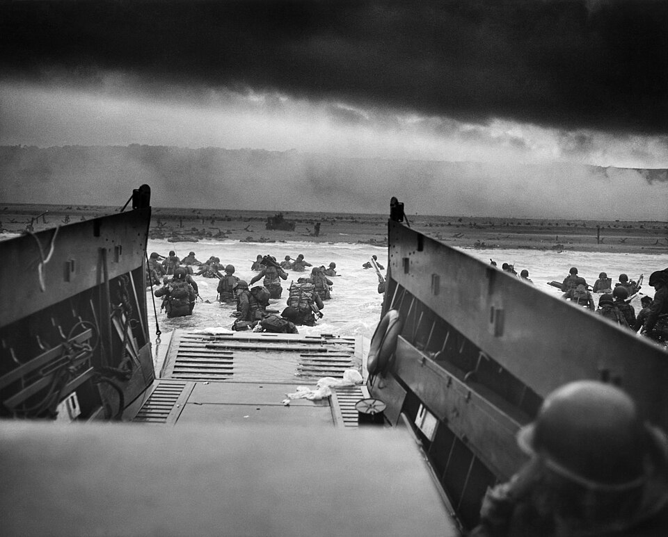

Los ejércitos aliados desembarcan en Normandía: comenzó la batalla por la liberación de Europa
Al amparo de cinco mil buques y de un cielo cubierto de aviones, tropas americanas, británicas y canadienses tomaron pie en cinco playas de la costa francesa. «Los ojos del mundo están sobre ustedes», les dijo Eisenhower. La esperanza vuelve al continente por el mismo mar por el que hace cuatro años se retiró.

Al alba de hoy, bajo un cielo gris y sobre un mar picado, la mayor flota reunida jamás por el hombre puso proa a la costa de Normandía: cerca de cinco mil buques de todo porte, precedidos en la noche por millares de paracaidistas y cubiertos por una fuerza aérea que oscureció el amanecer. Las barcazas bajaron sus rampas frente a cinco playas cuyos nombres en clave conocerá la historia, y los primeros soldados avanzaron por el agua helada bajo el fuego de las fortificaciones alemanas. Al caer la noche, unos ciento cincuenta mil hombres pisaban suelo francés. El primer comunicado aliado, de una sobriedad militar absoluta, cabe en una línea: los desembarcos continúan.
Cuatro años esperó el mundo esta mañana. Desde el verano de 1940, cuando Francia cayó y el último soldado británico se reembarcó en Dunkerque, el continente entero quedó bajo una ocupación que lo ha llenado de guarniciones, rehenes y alambradas. La empresa de volver se preparó durante años con un secreto obsesivo: puertos artificiales para remolcar pieza a pieza, ejércitos enteros adiestrados en las costas de Inglaterra, y un juego de engaños destinado a persuadir al enemigo de que el golpe caería en otra parte. Del otro lado esperaba el llamado Muro del Atlántico: minas, obstáculos de acero clavados en la arena y hormigón artillado a lo largo de cientos de millas de costa.
La orden final dependió del cielo. Una tormenta obligó a aplazar la operación veinticuatro horas, y en la madrugada de ayer, con un respiro apenas entre dos frentes de mal tiempo, el general Eisenhower tomó la decisión de la que ahora pende todo. A las tropas les había dirigido una orden del día que se leyó en cada buque y cada campamento: «Están a punto de embarcarse en la Gran Cruzada. Los ojos del mundo están sobre ustedes». La resistencia varía según los sectores: en algunas playas se avanzó tierra adentro en pocas horas; en otra, que los partes describen con palabras cuidadosas, los americanos debieron ganar palmo a palmo un frente erizado de fuego.
Las escenas del día pertenecen menos a la épica que al padecimiento sereno: hombres descompuestos por horas de oleaje que saltaron a un agua que les llegaba al pecho con treinta kilos a la espalda; capellanes de rodillas en la arena; ingenieros abriendo sendas entre las minas bajo el fuego, y en lo alto de una punta rocosa, comandos trepando el acantilado con cuerdas y escalas para acallar cañones. Detrás del frente, Francia escuchó: la radio de Londres pidió a las poblaciones costeras apartarse del litoral, y el general De Gaulle anunció a su país que la batalla suprema ha comenzado. En muchas ciudades aliadas la gente no fue hoy a los cafés: fue a las iglesias, que abrieron todo el día.
Nada autoriza todavía el júbilo. La cabeza de puente es angosta, el enemigo conserva intactas sus reservas acorazadas y los partes callan, con razón, el precio de la jornada, que habrá de contarse en millares de vidas. La guerra no terminó esta mañana; apenas cambió de dirección. Pero algo se sabe ya con certeza en las playas de Normandía: la liberación de Europa dejó de ser una promesa para convertirse en una operación en marcha, con fecha, mapa y sangre. A los pueblos que llevan cuatro años esperando detrás de las alambradas les llegó por el mar la primera noticia verdadera. Este diario la registra con gravedad y sin adjetivos: han vuelto.